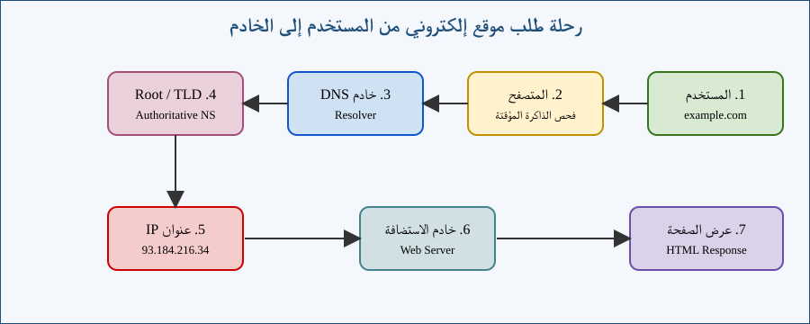

الطالب: يوسف إبراهيم سالم خليل بعيبر
الكود (الرقم الجامعي): 2601942
الفرقة: الثانية
السكشن: 188
في عصرنا الرقمي الحالي، أصبحت المواقع الإلكترونية جزءًا أساسيًا من حياتنا اليومية، سواء للتجارة الإلكترونية، التعليم، التواصل الاجتماعي، أو تقديم الخدمات المختلفة. لكن خلف كل موقع إلكتروني نزوره يوميًا، توجد بنية تحتية تقنية معقدة تجعل من الممكن الوصول إلى هذا الموقع من أي مكان في العالم خلال أجزاء من الثانية.
يهدف هذا البحث إلى تقديم شرح أكاديمي تفصيلي لآلية عمل المواقع الإلكترونية، وكيفية حصولها على عناوين فريدة يمكن الوصول إليها عبر الإنترنت، من خلال دراسة مفهومي استضافة المواقع (Web Hosting) وأسماء النطاقات (Domains).

الإنترنت هو شبكة عالمية ضخمة تربط ملايين الأجهزة الحاسوبية حول العالم ببعضها البعض، بحيث يمكن لهذه الأجهزة تبادل المعلومات والبيانات فيما بينها باستخدام مجموعة من البروتوكولات الموحدة، أهمها بروتوكول TCP/IP (Transmission Control Protocol/Internet Protocol).
لكي يتمكن أي جهاز من التواصل عبر الإنترنت، يجب أن يكون له عنوان فريد يُعرف بـ عنوان IP. يشبه هذا العنوان رقم الهاتف أو العنوان البريدي، حيث يُستخدم لتحديد موقع الجهاز بدقة على الشبكة.
أنواع عناوين IP:
| النوع | الحجم | طريقة الكتابة | ملاحظات |
|---|---|---|---|
| IPv4 | 32 بت | أربع مجموعات أرقام مفصولة بنقاط (مثال: 192.168.1.1) | عدد عناوينه محدود |
| IPv6 | 128 بت | مجموعات من الأرقام والحروف السداسية عشرية | تم تطويره لمواجهة نفاد عناوين IPv4 نظرًا للزيادة الهائلة في عدد الأجهزة المتصلة بالإنترنت |
تخيل أنك تريد زيارة موقع "جوجل" وكان عليك كتابة الرقم 142.250.185.78 بدلًا من google.com. من هنا نشأت الحاجة إلى نظام يسهّل على المستخدمين الوصول إلى المواقع دون الحاجة لحفظ أرقام معقدة، وهنا يأتي دور نظام أسماء النطاقات (DNS).
نظام أسماء النطاقات هو نظام هرمي موزع يقوم بترجمة أسماء النطاقات (مثل example.com) إلى عناوين IP رقمية يفهمها الحاسوب، والعكس صحيح. يُطلق عليه أحيانًا "دليل هاتف الإنترنت".
يتكون اسم النطاق من عدة أجزاء هرمية، مثل www.example.com:
| النوع | الوصف | أمثلة |
|---|---|---|
| gTLD | نطاقات عامة | .com, .org, .net, .edu |
| ccTLD | نطاقات الدول | .eg (مصر)، .sa (السعودية)، .uk (بريطانيا) |
| sTLD | نطاقات ذات غرض خاص | .gov, .mil |
عندما يكتب المستخدم عنوان موقع في المتصفح، تحدث سلسلة من العمليات المعقدة خلال أجزاء من الثانية:
الخطوة 1: طلب المستخدم
يقوم المستخدم بكتابة www.example.com في شريط العنوان بالمتصفح.
الخطوة 2: التحقق من الذاكرة المؤقتة (Cache)
يتحقق المتصفح أولًا من الذاكرة المؤقتة الخاصة به، فإذا كان قد زار الموقع سابقًا فقد يكون عنوان IP محفوظًا مسبقًا.
الخطوة 3: الاتصال بخادم DNS المحلي (Resolver)
إذا لم يُعثر على العنوان في الذاكرة المؤقتة، يتصل الجهاز بخادم DNS المحلي، وهو عادة تابع لمزود خدمة الإنترنت (ISP).
الخطوة 4: البحث الهرمي
إذا لم يكن لدى الـ Resolver المعلومة، يبدأ عملية بحث هرمية:
الخطوة 5: إرجاع النتيجة
يتم إرسال عنوان IP المطلوب إلى جهاز المستخدم، ويقوم المتصفح بتخزينه مؤقتًا لتسريع الزيارات القادمة.
الخطوة 6: الاتصال بالخادم
يتصل المتصفح مباشرة بعنوان IP الخاص بالخادم المستضيف للموقع، ويبدأ في تحميل محتوى الصفحة.
| نوع السجل | الوظيفة |
|---|---|
| A Record | يربط اسم النطاق بعنوان IPv4 |
| AAAA Record | يربط اسم النطاق بعنوان IPv6 |
| CNAME | يوجه نطاقًا فرعيًا إلى نطاق آخر |
| MX Record | يحدد خوادم البريد الإلكتروني |
| NS Record | يحدد خوادم الأسماء المسؤولة عن النطاق |
| TXT Record | يحتوي على معلومات نصية (للتحقق من الملكية مثلًا) |
ICANN (Internet Corporation for Assigned Names and Numbers): هي المنظمة الدولية غير الربحية المسؤولة عن تنسيق وإدارة نظام أسماء النطاقات على مستوى العالم، وضمان عدم تكرار أي اسم نطاق.
مسجلو النطاقات (Domain Registrars): شركات معتمدة من ICANN تقوم ببيع وتسجيل أسماء النطاقات للأفراد والشركات، مثل:
خوادم الأسماء هي المسؤولة عن توجيه طلبات DNS الخاصة بالنطاق إلى الخادم الصحيح. عند شراء نطاق وربطه باستضافة معينة، يجب تحديث خوادم الأسماء لتشير إلى شركة الاستضافة المختارة.
الاستضافة هي خدمة تقنية تتيح تخزين ملفات الموقع الإلكتروني (الأكواد، الصور، قواعد البيانات) على خوادم متصلة بالإنترنت بشكل دائم، بحيث تكون متاحة للزوار على مدار الساعة.
الخادم هو جهاز حاسوب قوي يعمل بشكل مستمر، ويحتوي على:
| نوع الاستضافة | الوصف | المميزات | العيوب |
|---|---|---|---|
| الاستضافة المشتركة (Shared Hosting) | يتشارك عدة مواقع نفس الخادم وموارده (المعالج، الذاكرة) | رخيصة الثمن، سهلة الإدارة | أداء محدود، تتأثر بالمواقع الأخرى على نفس الخادم |
| الخادم الافتراضي الخاص (VPS) | تقسيم خادم فعلي واحد إلى عدة خوادم افتراضية مستقلة باستخدام تقنية المحاكاة الافتراضية (Virtualization) | موارد مخصصة، تحكم أكبر، أداء أفضل | يتطلب خبرة تقنية أكبر، تكلفة أعلى |
| الخادم المخصص (Dedicated Server) | يحصل العميل على خادم فعلي كامل مخصص له وحده | أداء عالٍ جدًا، تحكم كامل، أمان أعلى | تكلفة مرتفعة، يتطلب خبرة تقنية متقدمة |
| الاستضافة السحابية (Cloud Hosting) | تعتمد على شبكة من الخوادم المترابطة بدلًا من خادم واحد (أمثلة: AWS, Google Cloud, Microsoft Azure) | مرونة عالية، قابلية للتوسع، موثوقية، دفع حسب الاستخدام | قد تزيد التكلفة مع زيادة الاستخدام |
| استضافة ووردبريس المُدارة (Managed WordPress Hosting) | استضافة مخصصة ومحسّنة لمواقع ووردبريس | تحديثات تلقائية وأمان مُدار | مخصصة لووردبريس فقط وتكلفتها أعلى من المشتركة |
لفهم الصورة الكاملة، إليك رحلة طلب موقع إلكتروني من البداية للنهاية:
| البروتوكول | الاسم الكامل | الوصف |
|---|---|---|
| HTTP | HyperText Transfer Protocol | البروتوكول الأساسي لنقل صفحات الويب بين الخادم والمتصفح |
| HTTPS | HTTP Secure | نسخة مشفرة وآمنة من HTTP، تستخدم شهادات TLS/SSL لتشفير البيانات المتبادلة، مما يحمي معلومات المستخدمين من الاختراق |
شهادة SSL (Secure Sockets Layer) هي ملف رقمي يربط مفتاح تشفير بمعلومات الموقع، وتُستخدم لـ:
هي شبكة من الخوادم الموزعة جغرافيًا حول العالم، تقوم بتخزين نسخ من محتوى الموقع وتقديمها للمستخدم من أقرب خادم جغرافي له، مما يسرّع من عملية تحميل الموقع. من الأمثلة الشهيرة: Cloudflare وAkamai.
تقنية توزّع الطلبات الواردة على عدة خوادم بدلًا من خادم واحد، لضمان عدم تحميل خادم واحد بشكل زائد وتحسين الأداء العام.
تقوم معظم خدمات الاستضافة الاحترافية بعمل نسخ احتياطية دورية لحماية البيانات من الفقدان في حالة حدوث أي عطل تقني.
من خلال هذا البحث، يتضح أن عمل أي موقع إلكتروني يعتمد على تكامل عدة عناصر تقنية أساسية:
فهم هذه الآلية ضروري لـ: